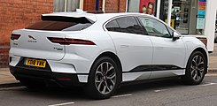
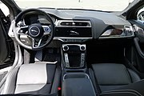

Jaguar I-Pace
From Wikipedia, the free encyclopedia
The Jaguar I-Pace is a battery-electric SUV produced by British automotive company Jaguar Land Rover (JLR) under their Jaguar marque. Deliveries of the I-Pace started in the second half of 2018.[1][2] It is the first electric SUV from a premium European automaker, ahead of the Audi E-tron EV (2018) and Mercedes-Benz EQC (2019).
Development [Edit]
The production car is 12mm narrower and 12mm lower than the Concept (pictured).
The Jaguar I-Pace is designed by Ian Callum. The concept version of the car, described as a five-seater sports car, was unveiled by JLR at the 2016 Los Angeles motor show and shown on-road in London in March 2017. Series production is handled by Magna Steyr in Graz,Austria,and the production version of the I-Pace was revealed in Graz on 1 March 2018.
Some of the electric drive technology has come out of the Jaguar I-Type electric Formula E racing car programme. and the concentric motors were developed by JLR engineer Dr. Alex Michaelides.
Specifications [Edit]
 
The Jaguar I-Pace has a WLTP-rated range of 290 miles (470 km) and an EPA-estimated range of 220 miles (350 km) .The I-Pace has a wade depth of 50 cm. The rear boot holds 720 litres (25.3 cu ft), along with 28 litres (1 cu ft) of front boot space. The drag coefficient is 0.29.
The car has all-wheel drive via two motors powered by a 90kWh LG Chem lithium-ion battery comprising 40% of the car's cost, and the battery management system is developed by JLR. Each motor delivers 197 hp (147 kW) and 258 lb⋅ft (350 N⋅m) of torque, for a total power of 395 hp (295 kW) and total torque of 516 lb⋅ft (700 N⋅m). The car is able to sprint from 0-62 mph (0–100 km/h) in 4.8 seconds, and to an electronically limited top speed of 124 mph (200 km/h).
The battery contains 432 pouch cells instead of thousands of cylindrical cells. It can charge from 0-80 percent in 85-minutes using DC charging (50kW). The battery can be charged at 100kW with DC Rapid Chargers, which enables a 0-80 percent charge in 45 minutes. Home charging with an AC wall box (7kW) achieve the same state of charge in 10 hours.
Racing [Edit]
In September 2017 Jaguar announced their single-make racing series for the I-Pace, called eTrophy.
References [Edit]
тут має бути список але я вже не можу
External links [Edit]
Official website